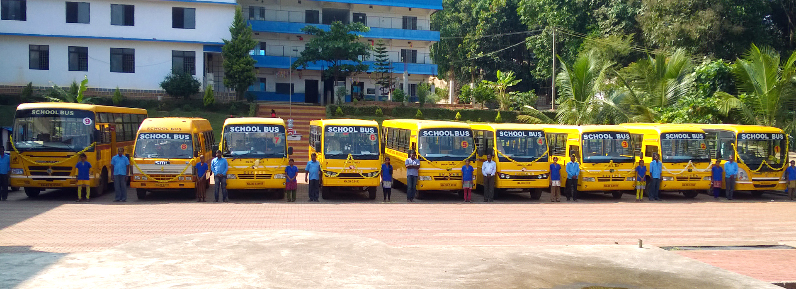

Education
PES University, Bangalore

BTech in Computer Science and Engineering
Specialization in Algorithm and Computing Model
Academic year: 2017-2021
GPA: 8.94/10
Relevant Coursework: Data Structure, Algorithms, DBMS, Web Technologies
University Official Website: PES University, Bangalore
Poornaprajna Pre-University College, Udupi
Stream: Science (Physics, Chemistry and Maths)
Major: Computer Science
Academic year: 2015-2017
Pre-University(12th Grade) PCMCs: 97.50%
College Official Website: Poornaprajna Pre-University College, Udupi
Mother Teresa Memorial Institutions, Shankaranarayana

Academic year: 2007-2015
SSLC(10th Grade): 94.88%
Institution Official Website: Mother Teresa Memorial Institutions, Shankaranarayana
K Shrinidhi Bhagavath
(+91)8105750137 ⋄ shrinidhibhagavath11@gmail.com
https://www.linkedin.com/in/k-shrinidhi-bhagavath-20210728
Education
PES University, Bangalore
July 2017-May 2021
BTech in Computer Science and Engineering
GPA 8.94/10
Relevant Coursework:Data Structure, Algorithms, DBMS, Web Technologies
SSLC(10th Grade): 94.88%
Pre-University(12th Grade) PCMCs: 97.50%
TECHNICAL STRENGTHS
Programming/Scripting Languages: C/C++, HTML, Python, JavaScript, PHP
Frameworks and tools: Brackets, Keras, Jenkins, Splunk, Superset,
Podman
EXPERIENCE
1. Internship at Akamai Technologies
June-July 2020 January-June 2021
Summer and Spring Internship 2020-2021
- Worked on Command-Line tool for pre-processing
data and reporting required performance parameter. Asynchronous execution is
implemented to make the process faster as this involves getting data from external applications.
- Improved automated monitoring framework that is
used to monitor the Akamai network during important software changes.
2. Software Engineer at Akamai Technologies
July 2021-Present
Full Time Employee
- Developed python interface for Grafana and
databases like Clickhouse and modified Apache Cassandra. Added functionality to
provide baselines for the metrics extracted from monitoring tools
- Managed application and created visual
representation for metrics provided from the application.
- Working on automated data analysis and
visualization of low latency logs from Akamai network.
PROJECTS
1. Low Latency Log Analysis and Visualization
Ongoing
SDE, Akamai Technologies
- Developed efficient way to analyse millions of rows and dynamically
update top 5% CP Code for all the service provided by Akamai.
- Created job for inserting hourly and daily aggregation of all
metrics to the database optimally.
- Working on automated analysis and reporting of probable cause for
any anomaly seen in the service.
2. Introduction to Fast Data Structure LTree
March 2020
PES University, Undergraduate Project
- Data structure that is being used so far has either faster insertion
at given position or faster access time. Research is being made toget better of both. LTree that
is being introduced has both faster access and faster insertion complexity. Ltree gives
O(log(n)) atworst for accessing and O(log2(n)) for insertion at any given position.
3. Extracting and Rendering 3D Structure and Orientation of Objects From 2D
Images
March 2021
PES University, Undergraduate Project
- Extracting depth of a single image using u-net encoder-decoder
model. Using intrinsic properties of camera to build point cloud for
specific image and the predicted depth. Use multiple image to get missing points, then smoothing
out the point cloud. Mesh for calculated point is generated to get surfaces and build 3d model.
ACHIEVEMENTS
- Selected for Central Sector Scheme of Scholarships for college and
University Students and was awarded with the same.
- Recipient of CNR Rao Merit Scholarship for being in top 20% in the
Department of Computer Science
- Represented Poornaprajna College and won 3rd price in Mathematics
Fest(Mathletics) held in St Aloysius College Mangalore
Download Resume